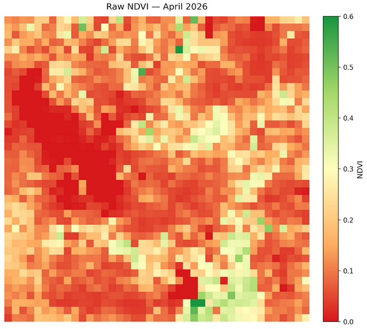
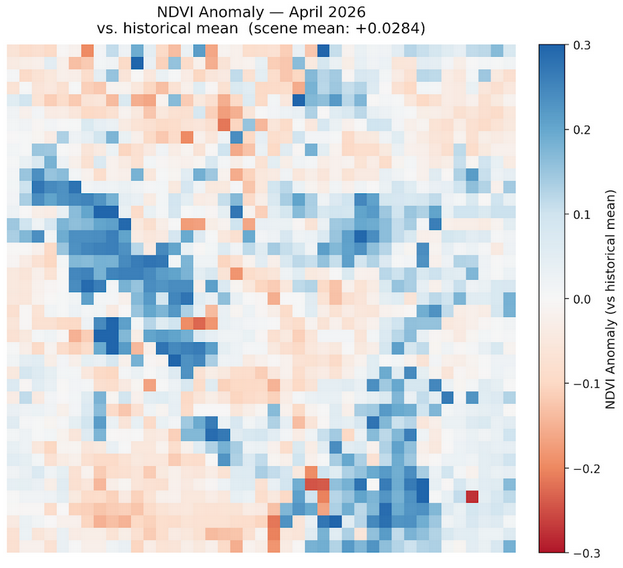
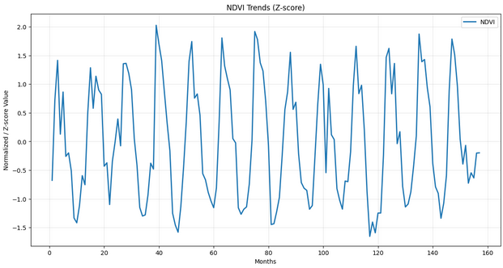
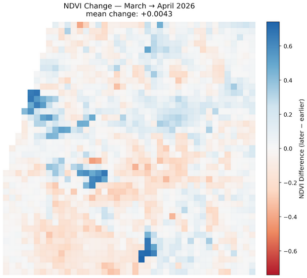

Monthly Report · Issue 05
April 2026
Vegetation dynamics across the Wasatch Front
By Scott Vars
Vegetation dynamics across the Wasatch Front
By Scott Vars
Raw vegetation index across the Wasatch Front for April 2026. Much of the Wasatch Front lay within the 0.1-0.4 range, with occasional patches of green outliers at upwards of 0.5 or even 0.6. The lake values (Great Salt Lake and Utah Lake) are both at 0, as normal. We are starting to see a green-up in vegetation, with pockets of green showing up in lower elevation areas as would be expected especially surrounding Utah Lake, although there has been more vegetation in the Salt Lake Valley.

NDVI was higher for April 2026, with an average increase in NDVI of about +0.028. This is an increase from the historical mean, showing significant growth in vegetation, especially around the Utah Lake and Provo areas. We can see, however, that there is quite a contrast in the vegetation growth, and it wasn't as uniform as March 2026, for example, where we saw a large increase throughout the entire Wasatch Front. In this case, we see lower elevation areas, such as the areas surrounding the Eastern part of Utah Lake, showing significant increase, while other parts of the Wasatch Front, specifically higher elevation areas like East of the Salt Lake Valley or North in the Wasatch Range, showed a significant decrease. So overall, we must evaluate this map with context, and we can't just take the mean increase at face value, as there are significant outliers. This increase in lower elevations with decrease in higher elevations can likely be attributed to the rainfall we received throughout April, which came as rain in lower elevations, furthering the growth of new vegetation while it fell as snow in higher elevations, masking existing vegetation. However, the decrease in higher elevation areas was not completely uniform, as some higher elevation areas also increased in vegetation.
The increase must be analyzed with context, as we saw significant gains in lower elevation areas with decrease in higher elevation areas. Although, this was not completely uniform.

Looking at the updated NDVI Trends graph, we can see that April 2026 remained relatively the same as March 2026 when it came to the z-scored value. I found this to be an interesting result, because we have already discussed in the last report (March 2026) how there was an early and fast green-up starting with March, which we would expect April to follow pretty closely, but instead we see how it is stalling. This could be due to the late April cold front that we have seen especially in the later part of the month, which canceled out the higher-than-average values in the lower-elevation areas.

NDVI increased overall from March to April, with a mean change of +0.0043 across the Wasatch Front region. This is not a very substantial gain, and is mostly a stagnant result despite being in a time period of what should be significant growth. The most substantial gains occurred in the Eastern parts of Wasatch Front, specifically in places such as East of Utah Lake. This likely reflects a spring green-up in the lower-elevation wetland areas as temperatures warmed, especially due to the March heat wave. The upper portions of the Wasatch Front showed a bit of decrease, which could be due to the moderate rainfall we had especially toward the end of the month, which led to increased snowfall and perhaps snow masking the vegetation at higher elevations. However, precipitation in lower-elevation areas would have come as rain, leading to an increase in plant growth.
The decrease in patches across the Front could be due to scattered snowfall from late-April precipitation, while the increase in lower elevations was due to the earlier green-up in March combined with rainfall.

The sharp increase over the actual lake area of the Great Salt Lake and Bear Lake and the small increase upon the Utah Lake area are likely due to remote sensing artifacts, so please disregard. They are likely not real readings and when looking at the raw NDVI maps, they did not change at all.
Compared to April 2025, we can see a significant increase in vegetation, with an overall mean change of about 0.0362. This is a notable year-over-year gain. Once again we continue to see the signal east of Utah Lake — an increase in vegetation, while areas in the Salt Lake Valley and North Wasatch Front continue to decrease, continuing to reinforce our earlier conclusions. April 2026 is meaningfully more green than April 2025, but this is a reflection of the early green-up in March, because as we have discussed before, the March 2026 scene is very similar to the April 2026 scene. So while this does reinforce our conclusions earlier, it is less meaningful as most of the vegetation growth was done last month, and we just continue to see the effects of it in the year-over-year map.

The April 2026 Wasatch Watch report tells a story of a green-up that stalled. After March's dramatic early surge, April added only a modest +0.0043 mean NDVI month-over-month — effectively flat for a period when vegetation growth is typically near its annual peak. The NDVI trends graph confirms this: April's z-score barely moved from March's, suggesting the rapid green-up that began ahead of schedule has plateaued rather than accelerated. A late-month cold front is the likely culprit, offsetting the continued warmth at lower elevations that would otherwise have pushed NDVI higher.
The seasonal anomaly and month-over-month maps both reveal a pronounced elevation split driven by April's precipitation pattern. Lower-elevation areas, particularly east of Utah Lake and around the Provo corridor, recorded meaningful gains — rain at these elevations fed new plant growth. Higher-elevation zones east of the Salt Lake Valley and across the northern Wasatch Range showed notable decreases, where the same precipitation fell as snow and masked existing vegetation. The result is an overall seasonal anomaly of about +0.028 above the historical April mean, but that headline figure obscures a landscape that responded very differently above and below the rain-snow line. Year-over-year, April 2026 is meaningfully greener than April 2025 by roughly +0.036, but that gap is largely inherited from March: the two scenes are nearly identical, meaning most of the real vegetation advancement happened last month and April simply held the position.
NDVI values derived from Landsat 8 TOA median composites at 5.5km resolution. Difference maps computed from raw NDVI prior to any normalization. Historical comparisons use the 2013–2026 Landsat archive.
Landsat 8/9 imagery courtesy of the U.S. Geological Survey via Google Earth Engine.
NOAA National Centers for Environmental Information, Monthly Climate Reports and drought summaries.